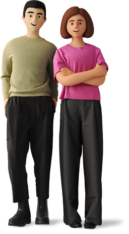
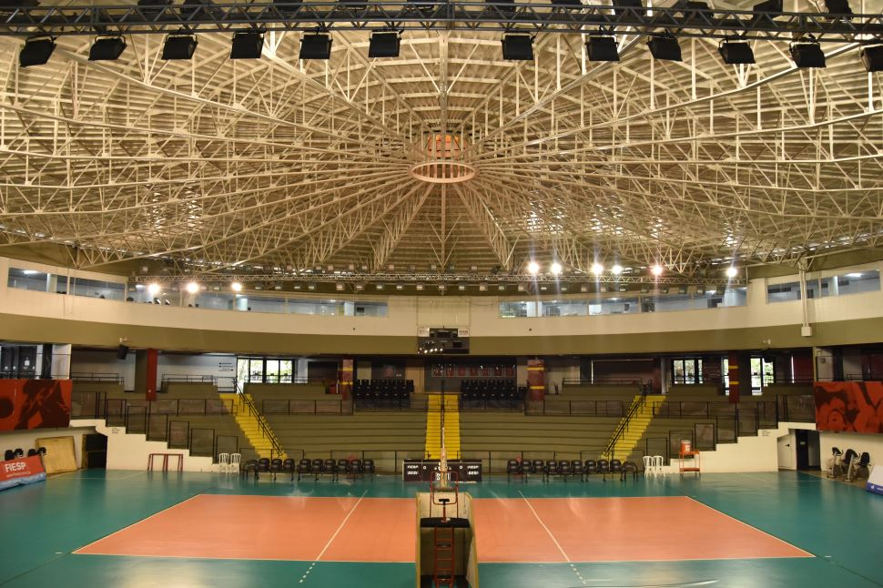
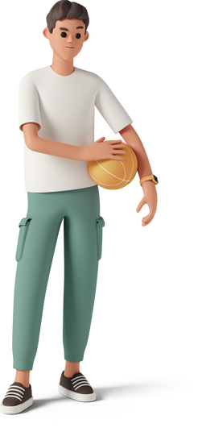
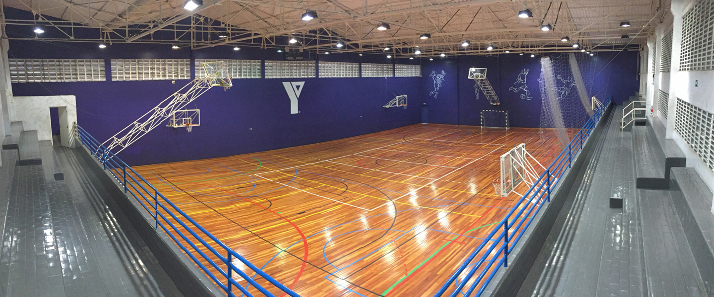
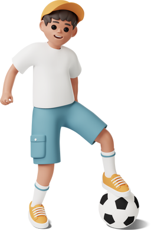

LAZER
Após a grande mudança no bairro da Vila Leopoldina, de um complexo industrial para um bairro residencial que presa pela qualidade de vida, logo nao podia ser diferente com os tipos de lazer que se poode praticar no bairro
Conheça os principais e mais praticados meios de lazer no bairro
PARQUE VILLA LOBOS

São mais de 120 mil m2 destinados a lazer, esporte, educação e cultura, com destaque para a pista e o bowl, onde ocorrem etapas de campeonatos mundiais de skate, e a ciclovia, que somada à ciclovia do Parque Villa-Lobos oferece 4,5 km de extensão.
O plantio das primeiras 1.000 mudas de árvores foi sem custos para o Estado, tratando-se de compensação ambiental de uma empresa, com manutenção por 12 meses. Posteriormente outras empresas, voluntariamente plantaram mais 2.000 mudas nativas, com manutenção por 24 meses. Foram realizadas ainda outras ações ambientais, com mutirões voluntários, reunindo adultos e crianças para plantio de 600 árvores de 90 espécies, entre elas cambuci e palmito-juçara, típicas da mata atlântica e ameaçadas de extinção. O parque ainda reservou uma área para o plantio de 50 mudas de pinheiro-brasileiro (Araucaria angustifolia), árvore símbolo do bairro de Alto de
PRAÇAS


O bairro da Vila Leopoldina conta com diversas praças destinadas ao lazer, contando com brinquedo para crianças, ou ate mesmo aparelhos de ginastica, sendo uma das principais, é comum relaizar diversas atividades recriativas, como piquiniques, passeios com o cahorro, camnhiadas, andar de bicicleta, praticar esportes, ou ate mesmo ter um bom ambiente para conversar com a familia e amigos, vale ressaltar também que as praças ficam perto uma das outras, então é comum numa caminhada pelo bairro conhecer mais de uma delas, mas também são proximas de comércios como padarias, mas principalmente bancas de jornais as principais praças são:
- Praça Adroaldo Barbosa Lima
- Praça Barão Pinto Lima
- Praça Senador José Roberto Leite Penteado
- Praça augusto Ruschi
SESI - SERVIÇO SOCIAL DA INDÚSTRIA

Serviço Social da Indústria (SESI) é o nome dado à instituição privada brasileira de promoção do bem-estar e qualidade de vida dos funcionários da Indústria, assim como de seus dependentes, familiares e da sociedade em geral.
Dentre as áreas de atuação do SESI estão a assistência social, a cultura, a educação, o lazer e a saúde, que são promovidos através de programas ligados à formação, informação e prestação de serviços ao público-alvo.
O SESI também, é responsavel por atender para muitas pessoas na área de lazer a partir de avaliação física, grupos de futebol, ginástica, voleibol, basquete etc. contando inclusive com partidas profissonais de volei.
PELEZAO

O Centro Educacional e Esportivo Edson Arantes do Nascimento (Pelezão), da Prefeitura, é uma ótima opção de lazer nas férias. O clube foi fundado em 20 de Novembro de 1969 e recentemente completou 50 anos. O clube oferece 100 mil metros quadrados de boa infraestrutura para seus visitantes, reunindo quadras (futebol, basquete, tênis e vôlei), piscinas, campo, pista de caminhada, academia ao ar livre para a terceira idade, brinquedoteca e playground.
No Pelezão, é possível praticar esportes como capoeira, futebol de campo e futsal, natação, jiu-jítsu e judô, entre outros. Ioga, alongamento, hidroginástica e condicionamento físico também estão entre as opções disponíveis. Ou seja, você pode relaxar, praticar esportes e cuidar da saúde em um mesmo lugar, de forma gratuita.
PELEZAO

A ACM é uma clube/instituição academica de esporte renomada, na qual, quando sócio, possivel praticar dos mais variados tipos de esporte, sendo eles, futsal, futebol, volei, natação, basquete, handebol, hidroginástica, fora musculação e malhação.
Além disso conta com um serviço muito atencioso com todas os auxilios corretos, contando com loja própria para praticar os esportes, alimentação variada, contando com almoço, mas também salgados, doces e bebidas. A ACM atinge os mais diversos públicos, contando desde crianças até idosos

Vila Leopoldina

© 2022 Todos os direitos reservados | Vila Leopoldina